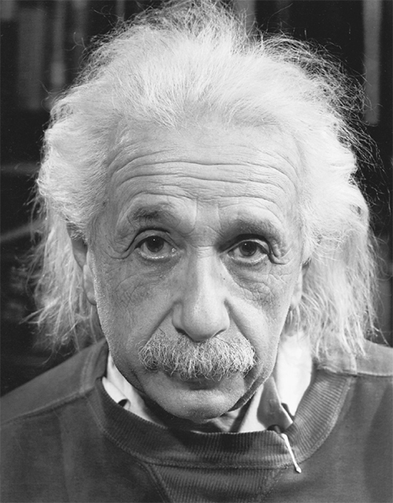

Ảnh chân dung Einstein do Philippe Halsman chụp, năm 1947
Suốt những tuần sau vụ thả bom nguyên tử, Einstein đặc biệt trầm lặng. Ông tránh né những phóng viên gõ cửa ngôi nhà ông thuê ở hồ Saranac và thậm chí từ chối cho Arthur Hays Sulzberger, người hàng xóm của ông trong dịp hè, chủ báo của New York Times, dẫn lời khi ông ta gọi tới.
Chỉ khi chuẩn bị rời ngôi nhà mùa hè vào giữa tháng Chín, hơn một tháng sau vụ thả bom, Einstein mới đồng ý nói về vấn đề này với phóng viên của một hãng thông tấn. Điểm mà ông nhấn mạnh là quả bom đã củng cố sự ủng hộ từ lâu của ông đối với chủ nghĩa liên bang thế giới. Ông nói: “Điều duy nhất có thể cứu rỗi nhân loại và toàn bộ nền văn minh là xây dựng một chính phủ thế giới. Chừng nào các quốc gia có chủ quyền còn tiếp tục chạy đua vũ trang và bí mật vũ trang, khó tránh khỏi những cuộc chiến mới trên thế giới.”
Cũng như trong khoa học, Einstein tìm kiếm trong nền chính trị thế giới một bộ nguyên tắc thống nhất để có thể tạo ra trật tự từ tình trạng vô chính phủ. Một hệ thống trong đó mỗi quốc gia có chủ quyền riêng, với lực lượng quân sự riêng, hệ tư tưởng cạnh tranh và lợi ích quốc gia xung đột chắc chắn sẽ gây ra nhiều cuộc chiến nữa. Vì vậy, ông cho rằng một chính phủ thế giới mang tính thực tế hơn là lý tưởng, thực tiễn hơn là khờ khạo.
Ông đã thận trọng suốt những năm tháng chiến tranh. Ông là một người tị nạn đang sống ở một quốc gia sử dụng sức mạnh quân sự vì các mục đích cao quý, hơn là các mục đích dân tộc. Nhưng cái kết của cuộc chiến đã thay đổi mọi thứ. Vụ thả bom nguyên tử cũng vậy. Sự gia tăng sức phá hủy của các loại vũ khí tấn công kéo theo sự gia tăng nhu cầu phải tìm kiếm một cấu trúc thế giới giúp đảm bảo an ninh. Đó là thời điểm để ông một lần nữa thẳng thắn bày tỏ thái độ trên phương diện chính trị.
Trong mười năm còn lại của cuộc đời, lòng nhiệt thành ủng hộ một cấu trúc quản lý thống nhất cho toàn thế giới trong ông sẽ cạnh tranh với lòng nhiệt thành tìm kiếm một lý thuyết trường thống nhất có khả năng kiểm soát toàn bộ các lực tự nhiên. Dù khác biệt trên gần như mọi phương diện, song cả hai cuộc tìm kiếm này đều cho thấy nơi ông tồn tại một nhu cầu bản năng hướng đến một trật tự rõ ràng. Ngoài ra, cả hai cũng cho thấy ở ông thái độ sẵn sàng đi ngược lại quan niệm thông thường, cũng như cảm giác yên ổn trong ông khi thách thức những quan điểm thịnh hành hiện thời.
Sau vụ thả bom một tháng, một nhóm các nhà khoa học đã cùng ký vào một tuyên bố khẩn thiết đề nghị thành lập một Hội đồng Quốc gia kiểm soát vũ khí hạt nhân. Einstein hưởng ứng bằng một bức thư gửi cho J. Robert Oppenheimer, người đã chỉ đạo thành công các nỗ lực khoa học tại Los Alamos. Einstein viết rằng, ông vui mừng trước các quan điểm đằng sau tuyên bố, nhưng ông phê bình các khuyến nghị chính trị này “rõ ràng là chưa đầy đủ” vì chúng vẫn ủng hộ quyền lực tối cao cho các quốc gia chủ quyền. “Chúng ta không thể nghĩ tới hòa bình nếu không có một tổ chức chính phủ thật sự xây dựng và thi hành luật lên các bên tham gia vào quan hệ quốc tế.”
Oppenheimer lịch sự chỉ ra rằng “những tuyên bố mà ông cho là của tôi không phải là của tôi”. Chúng được một nhóm các nhà khoa học khác viết ra. Tuy nhiên, ông này quả thật đã thách thức lập luận của Einstein về một chính phủ toàn thế giới chính thức: “Lịch sử vươn dậy của quốc gia này qua cuộc Nội chiến cho thấy việc thành lập một nhà nước liên bang là khó khăn đến thế nào khi tồn tại những khác biệt sâu sắc giữa các giá trị xã hội mà nó nỗ lực hợp nhất.” Oppeinheimer, do đó, đã trở thành người đầu tiên trong số nhiều nhà duy thực thời hậu chiến chê Einstein là quá thiên về lý tưởng. Tất nhiên, ta có thể phản bác lại luận điểm của ông này bằng cách lưu ý rằng trong thời kỳ đen tối đó, cuộc Nội chiến đã cho thấy những nguy cơ khủng khiếp nếu không có một chính quyền liên bang đảm bảo thay thế được cho hình thức quyền lực quân sự tối thượng thuộc về tiểu bang, trong khi có những khác biệt về giá trị giữa các tiểu bang thành viên.
Điều mà Einstein mơ đến là một “chính phủ” hay “quyền lực” thế giới độc quyền về sức mạnh quân sự. Ông gọi nó là thực thể “siêu quốc gia” thay vì “quốc tế”, vì nó tồn tại vượt trên các quốc gia thành viên, chứ không phải là lực lượng hòa giải đứng giữa các nước có chủ quyền. Einstein cảm thấy Liên Hợp Quốc, tổ chức được thành lập vào tháng Mười năm 1945, vẫn chưa đáp ứng được các tiêu chí này.
Trong những tháng tiếp theo, Einstein đưa ra các đề xuất của mình trong một loạt các bài viết và phỏng vấn. Đề xuất quan trọng nhất xuất hiện trong một cuộc trao đổi thư từ với Raymond Gram Swing, một nhà bình luận trên đài ABC. Einstein mời Swing ghé chơi nhà ông ở Princeton và kết quả là một bài báo của Einstein, như những gì được trao đổi với Swing, vào tháng Mười một năm 1945 trên tờ Atlantic với tựa đề “Chiến tranh nguyên tử hay hòa bình”.
Trong bài viết, Einstein cho rằng ba cường quốc – Hoa Kỳ, Anh, và Nga – nên hợp sức thành lập một chính phủ toàn thế giới, rồi sau đó mời các nước khác tham gia. Sử dụng một cụm từ dễ bị hiểu sai trong cuộc tranh luận nổi tiếng vào thời điểm đó, ông nói Washington cần giao “bí mật chế tạo bom” cho tổ chức mới này. Ông tin rằng cách duy nhất giúp kiểm soát hiệu quả vũ khí nguyên tử là nhường sự độc quyền về sức mạnh quân sự cho một chính phủ toàn thế giới.
Cuối năm 1945, chiến tranh lạnh nổ ra. Mỹ và Anh bắt đầu xung đột với Nga vì nước này đưa mô hình cộng sản vào Ba Lan và các nước Đông Âu khác do Hồng Quân tiếp quản. Về phần mình, Nga vội tìm kiếm một hàng rào an ninh và sẵn sàng căng lên trước bất cứ hành động nào mà Nga cho là can dự vào công việc nội bộ của mình, điều đó khiến các lãnh đạo nước này bác ý tưởng nhường chủ quyền cho một cơ quan quyền lực toàn thế giới.
Vì vậy, Einstein cố gắng nói rõ, chính phủ toàn thế giới như hình dung của ông sẽ không tìm cách áp đặt dân chủ tự do kiểu phương Tây khắp mọi nơi. Ông ủng hộ một thiết chế toàn thế giới được bầu chọn trực tiếp bởi người dân của mỗi quốc gia thành viên, thông qua hình thức bỏ phiếu kín, hơn là do lãnh đạo các quốc gia chỉ định. Tuy nhiên, ông nói thêm như một sự cam đoan với nước Nga, “Không nhất định phải thay đổi cấu trúc nội bộ của ba cường quốc. Tư cách thành viên trong hệ thống an ninh siêu quốc gia sẽ không dựa trên bất cứ tiêu chuẩn dân chủ tùy tiện nào.”
Một vấn đề mà Einstein không thể giải quyết gọn là chính phủ toàn thế giới này cần có những quyền hành gì để can thiệp vấn đề nội bộ của các quốc gia. Chính phủ này phải có khả năng “can thiệp vào những quốc gia nơi thiểu số đàn áp đa số,” ông nói và lấy Tây Ban Nha làm ví dụ. Nhưng điều đó khiến ông rơi vào cảnh há miệng mắc quai khi nói đến việc liệu tiêu chuẩn này có áp dụng với nước Nga hay không. Ông giải thích: “Ta phải nhớ rằng người dân Nga chưa có truyền thống giáo dục chính trị lâu dài. Những thay đổi nhằm cải thiện tình hình ở nước Nga hiện thời phải do thiểu số thực hiện, vì đa số không có khả năng làm như vậy.”
Những nỗ lực ngăn chặn các cuộc chiến trong tương lai của Einstein không chỉ được thúc đẩy bởi bản năng yêu chuộng hòa bình trước đây của ông, mà còn, như ông thú nhận, bởi cảm giác tội lỗi của ông về vai trò của mình trong việc khuyến khích dự án chế tạo bom nguyên tử. Tại một bữa tối ở Manhattan do Ủy ban trao giải Nobel tổ chức vào tháng Mười hai, ông lưu ý rằng Alfred Nobel, người phát minh ra thuốc nổ, đã tạo ra giải thưởng để “chuộc lỗi vì phát minh loại chất nổ mạnh nhất từng được biết đến ở thời của ông”. Giờ ông cũng rơi vào tình cảnh tương tự. Ông nói: “Ngày hôm nay, những nhà vật lý tham gia vào việc chế tạo loại vũ khí đáng sợ nhất mọi thời đại cũng đang bị ám ảnh bởi cảm giác về trách nhiệm tương tự, nếu không muốn nói là cảm giác tội lỗi.”
Những cảm thức này đưa Einstein tới việc nhận lĩnh vai trò chính sách công nổi bật nhất trong sự nghiệp của mình vào tháng Năm năm 1946. Ông trở thành Chủ tịch của Ủy ban Khẩn cấp của các Nhà khoa học Nguyên tử, một ủy ban mới được lập ra nhằm kiểm soát vũ khí hạt nhân và ủng hộ một chính phủ toàn thế giới. Einstein viết trong một bức điện gây quỹ tháng đó: “Sức mạnh được giải phóng của nguyên tử đã làm thay đổi tất cả những gì giúp gìn giữ các phương thức tư duy của chúng ta, và vì thế đẩy chúng ta mắc vào một thảm họa không tiền khoáng hậu.”
Leó Szilárd là giám đốc điều hành của ủy ban, ông thực hiện phần lớn công việc tổ chức. Einstein làm tại Ủy ban đến hết năm 1948, ông đóng vai trò phát biểu, chủ trì các cuộc họp một cách hết sức nghiêm túc. Ông nói: “Thế hệ của chúng ta đã mang đến cho thế giới sức mạnh cách mạng nhất kể từ khi người tiền sử phát hiện lửa. Sức mạnh cơ bản này của vũ trụ không phù hợp với khái niệm đã lỗi thời của chủ nghĩa dân tộc hẹp hòi.”
Chính quyền Truman đã đề xuất nhiều kế hoạch khác nhau nhằm kiểm soát năng lượng nguyên tử ở tầm quốc tế, nhưng không kế hoạch nào, bất kể cố ý hay không, giành được sự ủng hộ của Moscow. Do đó, cuộc tranh cãi về biện pháp tốt nhất nhanh chóng gây ra sự chia rẽ chính trị.
Một bên là những người ăn mừng thành công của Mỹ và Anh khi liên minh này chiến thắng trong cuộc đua vũ khí. Họ xem quả bom là vật bảo đảm cho tự do của phương Tây, và muốn bảo vệ cái mà họ xem là “bí mật”. Một bên là những người chủ trương kiểm soát vũ khí như Einstein. Ông nói với báo Newsweek: “Bí mật chế tạo bom nguyên tử đối với nước Mỹ chẳng khác gì bí mật phòng tuyến Maginot đối với nước Pháp năm 1939. Nó mang lại cho chúng ta sự bảo đảm an ninh tưởng tượng, và như thế chính nó là mối đe dọa to lớn.”
Einstein và những người bạn của mình nhận ra rằng cuộc chiến giành sự ủng hộ của dư luận cần được đấu tranh không chỉ ở Washington mà còn ở cả lĩnh vực văn hóa đại chúng. Việc này dẫn tới một mớ lộn xộn thú vị – và giàu tính minh họa lịch sử – vào năm 1946, khi họ bị đẩy vào cuộc đối đầu với Louis B. Mayer và một nhóm các nhà làm phim Hollywood.
Mọi sự bắt đầu khi Sam Marx, nhà viết kịch bản của hãng Metro–Goldwyn–Mayer, ngỏ ý muốn đến Princeton mời Einstein hợp tác cho một bộ phim dựa trên câu chuyện có thật về việc chế tạo quả bom. Einstein đáp, ông không có ý định tham gia. Một vài tuần sau đó, Einstein nhận được một bức thư đầy lo lắng của một quan chức phía Hiệp hội các Nhà khoa học Dự án Manhattan, nói rằng bộ phim này có xu hướng ủng hộ quân sự, tôn vinh sự ra đời của quả bom và sự bảo đảm an ninh mà nó mang tới cho nước Mỹ. Bức thư viết: “Tôi biết ông không muốn tên của mình bị mượn gắn lên một bộ phim gây hiểu nhầm về tác động quân sự và chính trị của quả bom. Tôi hy vọng ông sẽ muốn dùng tên tuổi của cá nhân mình để ngăn cản kịch bản bộ phim đó.”
Tuần sau đó, Szilárd đến gặp Einstein bàn về vấn đề này, và chẳng mấy chốc một nhóm các nhà vật lý yêu hòa bình dồn dập gửi đến ông những lo ngại. Vì vậy, Einstein đã đọc kịch bản và đồng ý tham gia chiến dịch ngăn chặn bộ phim. Ông nói: “Việc trình bày các dữ kiện thực tế [trong bộ phim] gây hiểu nhầm đến độ tôi từ chối hợp tác hoặc cho phép sử dụng tên tôi.”
Ông cũng gửi một bức thư châm chích tới ông chủ thế lực nổi tiếng của hãng phim, công kích bộ phim này, và cả giọng điệu trong những bộ phim trước đó của hãng. Ông viết: “Dù tôi không phải là người đi xem phim nhiều, nhưng tôi nhận thức qua nội dung chính của những bộ phim mà hãng phim của ông từng sản xuất, ông hãy hiểu lý do tôi viết những dòng này. Tôi thấy rằng các bộ phim đều có kịch bản thiên lệch theo quan điểm của phía Quân đội và các lãnh đạo quân đội trong dự án này, ảnh hưởng của họ không phải lúc nào cũng đúng theo quan điểm nhân bản như người ta mong muốn.”
Mayer chuyển bức thư của Einstein cho người phụ trách sản xuất bộ phim, ông này đáp lại bằng một bản ghi nhớ được Mayer gửi lại cho Einstein. Bản ghi nhớ viết, Tổng thống Truman là người “lo lắng nhất về việc sản xuất bộ phim này”, và đã đọc rồi thông qua kịch bản – điều này chẳng thể làm Einstein yên tâm. “Là công dân Mỹ, chúng ta phải tôn trọng quan điểm của Chính phủ nước mình.” Đó cũng không phải là lập luận hay nhất để nói với Einstein. Sau đó là một lập luận còn ít thuyết phục hơn: “Nên rõ rằng với chúng tôi, cần có sự thật thu hút sự chú ý của mọi người, cũng như một nhà khoa học cần đến một sự thật có thể kiểm chứng.”
Bức thư kết thúc bằng lời hứa rằng những vấn đề đạo đức mà các nhà khoa học đưa ra sẽ được thể hiện một cách thích hợp qua nhân vật một nhà khoa học trẻ tuổi do một diễn viên Tom Drake thủ vai. Bức thư trấn an: “Chúng tôi đã chọn trong số những nam diễn viên trẻ tuổi một người có thể thể hiện tốt nhất trí tuệ hơn người và tinh thần nghiêm túc. Ông chỉ cần xem lại diễn xuất của anh ta trong bộ phim ‘The Green Years’ [Những năm tháng tuổi xanh] là sẽ thấy.”
Chẳng có gì ngạc nhiên, bản ghi này không khiến Einstein thay đổi. Khi Sam Marx, người viết kịch bản, viết thư cầu xin ông thay đổi ý định và cho phép khắc họa chính hình ảnh về ông. Einstein đáp lại một cách cụt ngủn: “Tôi đã giải thích quan điểm của mình trong thư gửi ông Louis Mayer.” Marx vẫn kiên trì. Ông ta viết tiếp: “Khi bộ phim hoàn thành, khán giả sẽ có sự đồng cảm lớn nhất với nhà khoa học trẻ tuổi”. Và cuối ngày hôm đó, ông ta gửi đến một lá thư khác: “Đây là kịch bản mới đã được sửa lại.”
Kết thúc của sự việc này không quá khó đoán. Kịch bản mới làm các nhà khoa học vừa lòng, và họ không miễn nhiễm trước sức hấp dẫn của việc được tôn vinh trên màn ảnh rộng. Szilárd gửi Einstein một bức điện nói: “Đã nhận được kịch bản mới từ MGM và tôi viết để nói rằng tôi không phản đối việc sử dụng tên tôi trong đó.” Einstein nhượng bộ. Ông viết nguệch ngoạc bằng tiếng Anh phía sau bức điện: “Đồng ý cho sử dụng tên tôi trên cơ sở kịch bản mới.” Thay đổi duy nhất mà ông yêu cầu là cảnh Szilárd đến Long Island thăm ông năm 1939. Kịch bản viết rằng trước đó ông chưa từng gặp Roosevelt, nhưng thật ra ông đã.
Bộ phim The Beginning or the End [Khởi đầu hay kết thúc] nhận được những đánh giá tốt vào tháng Hai năm 1947. Bosley Crowther tuyên bố trên tờ New York Times: “Một câu chuyện nghiêm chỉnh, thông minh về sự phát triển và chế tạo bom nguyên tử, và lý thú ở chỗ không mang màu sắc tuyên truyền.” Nhân vật Einstein do diễn viên Ludwig Stossel thủ vai – anh này từng đóng một vai nhỏ trong bộ phim Casablanca, vai một người Do Thái Đức tìm cách đến nước Mỹ; sau này Stossel nổi lên trong quảng cáo rượu Swiss Colony trong những năm 1960, với câu nói nổi tiếng “Ông lão làm rượu nhỏ thó, là tôi đấy.”
Những nỗ lực của Einstein trong cuộc vận động kiểm soát vũ khí và xây dựng chính phủ toàn thế giới cuối những năm 1940 khiến ông bị gọi là kẻ “đầu bông mơ màng” và ngây thơ. Có thể ông là kẻ đầu bông mơ màng, ít nhất về vẻ ngoài, nhưng cho rằng ông là người ngây thơ liệu có đúng không?
Đa số các quan chức trong chính quyền Truman, thậm chí cả những người làm công tác kiểm soát vũ khí, đều nghĩ vậy. Chẳng hạn William Golden. Là một cán bộ Ban Năng lượng Nguyên tử, người chuẩn bị báo cáo cho Ngoại trưởng George Marshall, ông ta từng đến Princeton nhờ Einstein tư vấn. Einstein lập luận rằng Washington cần phải cố gắng hơn nữa để lôi kéo Moscow vào kế hoạch kiểm soát vũ khí. Golden cảm thấy Einstein đang nói “với hy vọng trẻ con về cuộc cứu rỗi và không suy nghĩ thấu đáo về các chi tiết trong giải pháp của mình”. Ông thuật lại với Marshall: “Ngạc nhiên là, dù có lẽ chẳng có gì đáng ngạc nhiên, ngoài năng lực toán học ra, dường như ông ta ngờ nghệch trong lĩnh vực chính trị quốc tế. Người làm cho khái niệm về chiều thứ tư trở nên phổ biến lại chỉ có thể nghĩ về hai trong số chúng khi cân nhắc đến chính phủ toàn thế giới”
Về sự những gì được gọi là khờ khạo nơi Einstein, đó không chỉ là vì ông có cái nhìn nhân bản. Là người sống ở Đức nửa đầu của thế kỷ XX, khả năng cho điều đó nơi ông là rất thấp. Khi nhiếp ảnh gia nổi tiếng Philippe Halsman, người đã trốn chạy thoát khỏi Đức Quốc xã nhờ sự giúp đỡ của Einstein, hỏi ông có nghĩ rằng hòa bình lâu dài hay không, Einstein đã trả lời: “Không, chừng nào vẫn còn con người thì chừng đó sẽ vẫn còn chiến tranh.” Đúng lúc đó Halsman bấm máy và bắt được ánh nhìn buồn bã thông suốt mọi sự trong mắt Einstein, ánh nhìn làm bức chân dung trở nên nổi tiếng.
Chủ trương ủng hộ một chính phủ toàn thế giới nắm giữ quyền lực của Einstein không dựa trên sự ủy mị, mà dựa trên đánh giá dứt khoát này của ông về bản tính con người. “Nếu ý tưởng về chính phủ toàn thế giới không thực tế,” ông nói vào năm 1948, “thì chỉ có duy nhất một quan điểm thực tế về tương lai của chúng ta: con người hủy diệt nhau trên quy mô lớn”.
Giống như một số đột phá khoa học khác của Einstein, cách tiếp cận vấn đề của ông cũng từ bỏ những giả định được xem là chân lý. Chủ quyền quốc gia và sự tự chủ về quân sự đã là nền tảng cho trật tự thế giới hàng bao thế kỷ, giống như thời gian tuyệt đối và không gian tuyệt đối là nền tảng của trật tự vũ trụ vậy. Chủ trương vượt lên trên lối thực hành cũ là một ý tưởng cấp tiến, sản phẩm của một nhà tư tưởng bất tuân khuôn mẫu. Tuy nhiên, giống như nhiều ý tưởng khác của Einstein, cấp tiến lúc đầu, nhưng có thể nó chẳng còn như vậy nữa nếu được chấp nhận.
Chủ nghĩa liên bang thế giới mà Einstein – và thật ra nhiều nhà lãnh đạo nghiêm túc và có tên tuổi trên thế giới – chủ trương trong những năm đầu Mỹ nắm độc quyền về vũ khí nguyên tử không phải là hoang tưởng. Ông bị cho là khờ khạo vì thúc đẩy ý tưởng của mình theo một xu hướng đơn giản và không cân nhắc đến những thỏa hiệp phức tạp. Các nhà vật lý không quen với việc cắt bỏ hoặc thỏa hiệp về các phương trình của mình để chúng được chấp nhận. Vì thế họ không thể trở thành chính trị gia giỏi.
Cuối những năm 1940, khi thấy rõ rằng nỗ lực kiểm soát vũ khí hạt nhân sẽ thất bại, Einstein nhận được câu hỏi: cuộc chiến tiếp theo sẽ ra sao. Ông trả lời: “Tôi không biết Chiến tranh Thế giới Thứ ba sẽ được tiến hành như thế nào, nhưng tôi có thể nói họ sẽ dùng vũ khí gì trong Chiến tranh Thế giới Thứ tư: Đá.”
Những người chủ trương một biện pháp kiểm soát bom nguyên tử trên bình diện quốc tế phải đối mặt với một vấn đề lớn: nên đối phó với nước Nga như thế nào. Ngày càng có nhiều người Mỹ, và những nhà lãnh đạo mà họ bầu lên, đi đến chỗ xem những người xô viết ở Moscow là những kẻ lừa đảo và bành trướng nguy hiểm. Về phần mình, người Nga có vẻ không màng đến chuyện kiểm soát vũ khí hay xây dựng một chính phủ toàn thế giới. Họ có những lo lắng sâu sắc về an ninh, và muốn có một quả bom nguyên tử của riêng mình, còn các nhà lãnh đạo nước này phản ứng trước bất cứ dấu hiệu can thiệp nào từ bên ngoài vào các vấn đề nội bộ của họ.
Thái độ của Einstein đối với nước Nga có sự không nghiêng theo những xu hướng hiện thời đặc trưng ở ông. Ông không ca tụng người Nga khi họ trở thành đồng minh trong cuộc chiến như nhiều người khác, và cũng không bôi xấu họ khi chiến tranh lạnh bắt đầu. Nhưng đến cuối những năm 1940, điều đó càng đẩy ông ra xa khỏi những luồng quan điểm chủ đạo của người Mỹ.
Ông không thích chế độ chuyên chính cộng sản nhưng cũng không cho nó là mối nguy hiểm tiếp theo đối với nền tự do của nước Mỹ. Ông dự cảm rằng mối nguy hiểm tiếp theo là cơn kích động ngày càng cao trước mối đe dọa mang tên Hồng Quân. Khi Norman Cousins, biên tập viên tờ Saturday Review, người bảo trợ trong báo giới của giới tri thức Mỹ theo tinh thần quốc tế, viết một bài kêu gọi kiểm soát vũ ở tầm quốc tế, Einstein hưởng ứng bằng một bức thư nhưng thêm vào một lời cảnh báo. Ông nói: “Điều tôi không đồng tình là trong bài báo ông đã không chỉ không phản đối nỗi sợ hãi đầy kích động đang lan tràn khắp đất nước chúng ta về sự hiếu chiến của người Nga, mà thật ra còn khuyến khích nó. Tất cả chúng ta cần tự hỏi nước nào trong hai nước có lý do khách quan chính đáng rõ ràng để lo ngại về sự hiếu chiến của bên kia.”
Về sự đàn áp diễn ra trong nước Nga, Einstein thường chỉ đưa ra những chỉ trích ôn hòa, mềm mỏng với các lý lẽ biện minh. Ông phát biểu trong một cuộc trao đổi: “Không thể phủ nhận có sự tồn tại của một chính sách áp bức hà khắc trong không gian chính trị ở đó. Tuy nhiên, đó phần nào là do nhu cầu đập tan tầng lớp thống trị trước đây và đưa một dân tộc có nền văn hóa cổ hủ, thiếu kinh nghiệm về chính trị lên thành một quốc gia được tổ chức tốt và vận hành hiệu quả. Tôi sẽ không phán xét trước những nan đề như thế.”
Einstein sau đó đã trở thành mục tiêu của những nhà phê bình xem ông là người ủng hộ Liên Xô. John Rankin, dân biểu bang Mississippi, nói rằng kế hoạch chính phủ toàn thế giới của Einstein “đơn giản là theo đường lối cộng sản”. Phát biểu tại Nghị viện, Rankin cũng lên án nghiên cứu của Einstein: “Kể từ khi ông ta xuất bản cuốn sách về thuyết tương đối và cố gắng thuyết phục thế giới rằng ánh sáng có trọng lượng, ông ta đã lợi dụng danh tiếng khoa học của mình… và tham gia các hoạt động của cộng sản.”
Einstein tiếp tục những cuộc trao đổi dài hơi về nước Nga với Sidney Hook, một nhà triết học xã hội, từng là một người cộng sản rồi sau đó trở thành một người chống cộng quyết liệt. Những cuộc trao đổi này không được tán tụng như những cuộc trao đổi của ông với Bohr, nhưng cũng không kém căng thẳng chẳng. Einstein trả lời một bức thư của Hook: “Tôi không mù trước những khiếm khuyết nghiêm trọng trong hệ thống quản lý của người Nga. Nhưng mặt khác, nó có những điểm đáng khen, và khó có thể đoan chắc rằng họ sẽ giữ được nếu thực hiện theo những phương pháp mềm mỏng.”
Hook tự trao cho mình trách nhiệm thuyết phục Einstein hiểu được những lỗi sai trong cách nhận thức của ông và thường gửi cho ông những lá thư dài, Einstein lờ đi hầu hết số đó. Còn khi viết trả lời, Einstein thường đồng ý rằng sự đàn áp của Nga là không đúng, nhưng ông thường cân bằng những phán xét này bằng cách nói thêm rằng có thể hiểu được điều đó. Như ông viết trong một bức thư trả lời năm 1950:
Tôi không đồng tình với sự can thiệp của chính quyền Xô Viết vào các vấn đề tri thức và nghệ thuật. Đối với tôi, sự can thiệp đó là đáng phản đối, gây hại và thậm chí là đáng chê trách. Về việc tập trung hóa quyền lực chính trị và những hạn chế về tự do cá nhân, tôi cho rằng những hạn chế này không nên vượt khỏi những đòi hỏi về an ninh, trật tự và những điều cần thiết xuất phát từ một nền kinh tế kế hoạch hóa. Dẫu thế nào thì người ngoài cũng khó có thể xét đoán đúng các sự kiện và các khả năng này. Dù sao chế độ Xô Viết thật sự đã đạt được những thành tựu to lớn trong lĩnh vực giáo dục, y tế công cộng, phúc lợi xã hội và kinh tế, và như một khối thống nhất, toàn thể dân tộc đó đã đạt được những thành tựu như vậy.
Dù đưa ra những lý lẽ biện hộ cho thái độ của Moscow, song Einstein không phải là người ủng hộ Liên Xô như một số người cố gắng mô tả ông. Ông luôn từ chối những lời mời đến Moscow và khước từ nỗ lực lôi kéo ông vào hàng ngũ đồng chí của những người bạn cánh tả. Ông lên án việc Moscow nhiều lần sử dụng quyền phủ quyết tại Liên Hợp Quốc và sự bất hợp tác trước ý tưởng chính phủ toàn thế giới, ông còn chỉ trích nặng khi Liên Xô nói rõ rằng họ không hứng thú với việc kiểm soát vũ khí.
Điều này có thể thấy rõ khi một nhóm chính thức các nhà khoa học người Nga công kích Einstein trên một bài báo ở Moscow năm 1947 có nhan đề: “Những quan niệm sai lầm của Tiến sỹ Einstein”. Họ tuyên bố rằng cái giấc mơ về một chính phủ toàn thế giới là một âm mưu của những người tư bản chủ nghĩa. Họ viết: “Những người ủng hộ một siêu quốc gia toàn thế giới đang đòi chúng ta phải tự nguyện dâng nền độc lập của mình cho chính phủ toàn thế giới, điều này chỉ là một dấu hiệu cho thấy sự độc quyền của chủ nghĩa tư bản.” Họ lên án Einstein vì đã đề nghị xây dựng một nghị viện siêu quốc gia được bầu cử trực tiếp. “Ông ta đã đi xa đến mức tuyên bố rằng nếu Liên Xô từ chối tham gia vào tổ chức mới này, thì các nước khác có mọi quyền tiến bước mà không cần đến Liên Xô. Einstein đang ủng hộ một đường lối chính trị có lợi cho những kẻ thù không đội trời chung của chúng ta trên phương diện hợp tác quốc tế chân thành và hòa bình bền vững.”
Những người ủng hộ Xô Viết tại thời điểm đó sẵn sàng đi theo bất cứ đường lối nào mà Moscow vạch ra. Sự tuân theo đó không phải là bản chất của Einstein. Khi ông không đồng ý với ai, ông thường vui vẻ nói như vậy. Ông vui vẻ đáp lại các nhà khoa học người Nga.
Mặc dù ông nhắc lại sự ủng hộ của mình đối với các lý tưởng xã hội dân chủ nhưng ông phê bình niềm tin vào học thuyết cộng sản của người Nga. Ông viết: “Chúng ta không nên mắc phải sai lầm là đổ lỗi cho chủ nghĩa tư bản về những tệ nạn xã hội và chính trị, cũng như không nên giả định rằng sự thiết lập chủ nghĩa xã hội là đủ để cứu chữa cho những căn bệnh xã hội và chính trị của nhân loại.” Suy nghĩ đó dẫn đến “sự bất dung cực đoan” đã thấm vào những người trung thành với cộng sản, và nó có thể dẫn tới nền chuyên chế.
Dù chỉ trích thứ chủ nghĩa tư bản tự do tung tác, song điều mà ông ghét hơn cả – trong suốt cuộc đời – là sự áp chế tư duy tự do và tính cá nhân. Ông cảnh báo các nhà khoa học người Nga: “Bất cứ chính phủ nào cũng là ác quỷ nếu nó mang trong mình xu hướng suy thoái thành chuyên chế. Hiểm họa của sự suy thoái này sẽ khốc liệt hơn ở một đất nước mà chính phủ không chỉ có quyền lực thống lĩnh lực lượng vũ trang, mà còn có quyền hành với mọi kênh giáo dục và thông tin, cũng như đối với sự tồn tại của mỗi công dân.”
Khi cuộc tranh luận của ông với các nhà khoa học người Nga đang lên cao trào, Einstein và Raymond Gram Swing cập nhật bài báo mà họ đăng trên tờ Atlantic hai năm trước đó. Lần này Einstein công kích các nhà lãnh đạo Nga. Lý do họ không ủng hộ chính phủ toàn thế giới, theo ông, “rõ ràng chỉ là cái cớ”. Điều họ thật sự sợ là hệ thống ra lệnh có xu hướng áp chế không tồn tại trong môi trường đó. “Có thể phần nào đó người Nga đúng do phải khắc phục những khó khăn mà họ gặp phải khi duy trì cấu trúc xã hội hiện tại trong một chế độ siêu quốc gia, dù vậy, khi thời cơ đến, có lẽ họ sẽ thấy tổn thất từ việc này chẳng đáng kể gì so với khi bị tách lìa khỏi một thế giới kỷ cương.”
Theo ông, phương Tây nên tiếp tục tiến hành xây dựng chính phủ toàn thế giới mà không cần nước Nga. Cuối cùng rồi Nga sẽ gia nhập, ông nghĩ: “Tôi tin rằng nếu việc này được thúc đẩy một cách khôn khéo (hơn là theo cách vụng về của Truman), Nga sẽ hợp tác khi nhận ra rằng mình không thể ngăn chặn chính phủ toàn thế giới nữa.”
Kể từ đó, Einstein dường như có niềm tự hào trái khoáy khi chống đỡ trước những người đổ tội cho Nga về mọi thứ, và những người tránh chỉ ra sai lầm của nước Nga. Khi một người yêu chuộng hòa bình có xu hướng cánh tả mà ông biết gửi đến ông một cuốn sách trong đó ông ta viết về vấn đề kiểm soát vũ khí, với hy vọng được Einstein viết cho đôi lời bình, thì thay vào đó, ông ta lại nhận được lời trách mắng. Einstein viết: “Anh đã trình bày toàn bộ vấn đề như một người ủng hộ quan điểm của Liên Xô, nhưng lại im lặng về mọi thứ không có lợi cho Liên Xô (và điều này thì không ít).”
Cũng như giai đoạn sau khi Đức quốc xã lên nắm quyền ở Đức, vào giai đoạn này quan điểm yêu chuộng hòa bình từ lâu của ông cũng phát triển thêm nét thực tế và cứng rắn khi nói về nước Nga. Những người theo chủ nghĩa hòa bình thường cho rằng việc Einstein phá vỡ triết lý của chủ trương này trong những năm 1930 là một phút lầm lạc do mối đe dọa đặc biệt từ phía Đức Quốc xã, và một số cây viết tiểu sử khác cũng cho nó là điều bất thường tạm thời. Thế nhưng, họ đã không thấy hết sự chuyển đổi trong suy nghĩ của Einstein. Ông không bao giờ còn là người theo chủ nghĩa yêu hòa bình giản đơn nữa.
Chẳng hạn khi ông được mời tham gia chiến dịch vận động các nhà khoa học Mỹ từ chối nghiên cứu vũ khí nguyên tử, ông không chỉ từ chối mà còn phê bình những người tổ chức vì đã chủ trương giải trừ vũ khí đơn phương. Ông giảng giải: “Việc giải trừ quân bị sẽ chẳng có tác dụng gì nếu tất cả các nước không cùng thực hiện. Nếu một quốc gia còn tiếp tục vũ trang, bất kể là công khai hay bí mật, thì việc giải trừ quân bị của các quốc gia khác sẽ dẫn đến những hậu quả khủng khiếp.”
Những người theo chủ nghĩa hòa bình như ông đã mắc sai lầm vào đầu những năm 1920 khi khuyến khích các nước láng giềng của Đức không tái vũ trang, ông giải thích thêm. “Điều này đơn thuần làm lợi cho việc khuyến khích sự kiêu ngạo của người Đức.” Giờ điều tương tự cũng đang diễn ra với nước Nga. Ông viết cho những người kêu gọi ký đơn kiến nghị chống hoạt động quân sự: “Tương tự như thế, đề nghị của các ông, nếu có hiệu lực, chắc chắn sẽ gây suy yếu nghiêm trọng các nền dân chủ. Vì chúng ta phải nhận ra rằng có lẽ chúng ta không thể tạo ra bất cứ ảnh hưởng lớn nào lên thái độ của những đồng nghiệp người Nga.”
Ông giữ lập trường tương tự khi những đồng nghiệp cũ ở Liên đoàn Phản chiến mời ông tham gia Liên đoàn năm 1948. Họ tôn ông lên bằng cách trích dẫn một trong những tuyên bố yêu chuộng hòa bình của ông, nhưng Einstein khước từ. Ông trả lời: “Tuyên bố đó bày tỏ chính xác quan điểm mà tôi có về hoạt động phản chiến trong giai đoạn từ 1918 đến đầu những năm 1930. Tuy nhiên, giờ tôi cảm thấy chính sách kêu gọi các cá nhân từ chối tham gia các hoạt động quân sự đã quá lỗi thời.”
Chủ nghĩa hòa bình giản đơn có thể gây nguy hiểm, ông cảnh báo, đặc biệt căn cứ vào những chính sách nội bộ và thái độ đối ngoại của nước Nga. Ông tranh luận: “Phong trào phản chiến thật sự giúp gây suy yếu những quốc gia có kiểu chính phủ tự do hơn và gián tiếp hỗ trợ cho chính sách của các chính phủ chuyên chế hiện nay. Các phong trào phản chiến kêu gọi việc từ chối nghĩa vụ quân sự sẽ chỉ khôn ngoan nếu nó khả thi ở khắp mọi nơi trên toàn thế giới. Tư tưởng phản đối nghĩa vụ quân sự là bất khả ở Nga.”
Một số người theo chủ nghĩa hòa bình tranh cãi rằng chủ nghĩa xã hội toàn thế giới, chứ không phải chính phủ toàn thế giới, mới là nền tảng cho nền hòa bình lâu dài. Einstein không đồng ý. Ông phản bác chủ trương đó như sau: “Các ông nói rằng chủ nghĩa xã hội tự bản chất đã từ chối biện pháp chiến tranh. Tôi không tin điều đó. Tôi có thể dễ dàng mường tượng ra hai quốc gia xã hội chủ nghĩa có thể phát động chiến tranh chống lại nhau.”
Một trong những điểm dễ bùng nổ ban đầu của thời kỳ chiến tranh lạnh là Ba Lan, nơi những người Hồng Quân tiếp quản đã thiết lập một chế độ thân Liên Xô không qua bầu cử công khai như hứa hẹn của Moscow. Khi Chính phủ Ba Lan mới mời Einstein tham dự một hội nghị, họ đã được biết thế nào là sự độc lập của ông với giáo điều đảng phái. Ông lịch sự giải thích rằng ông không còn ra nước ngoài được nữa và gửi một thông điệp cẩn trọng, trong đó vừa khích lệ, nhưng cũng vừa nhấn mạnh lời kêu gọi thành lập chính phủ toàn thế giới.
Người Ba Lan quyết định xóa bỏ những nội dung về chính phủ toàn thế giới mà Moscow phản đối. Einstein nổi giận và ông cho tờ New York Times đăng tải toàn bộ thông điệp chưa được gửi đi. Thông điệp này viết: “Nhân loại chỉ có thể được bảo vệ trước nguy cơ hủy diệt ngoài sức tưởng tượng và bị tiêu diệt hàng loạt nếu có một tổ chức siêu cường có quyền tạo ra hoặc sở hữu những vũ khí này.” Ông cũng phàn nàn với những người yêu chuộng hòa bình ở Anh, những người tổ chức một hội nghị mà tại đó những người cộng sản tìm cách thuyết phục mọi người ủng hộ đường lối của họ. “Tôi cho rằng những đồng nghiệp của chúng ta ở phía bên kia hoàn toàn không thể trình bày ý kiến thật sự của họ.”
Ông đã chỉ trích Liên Xô, từ chối đến thăm và phản đối việc chia sẻ bí mật nguyên tử nếu chính phủ toàn thế giới không được thành lập. Ông chưa bao giờ tham gia dự án chế tạo bom và không biết thông tin bí mật nào về công nghệ của nó. Tuy nhiên, Einstein vô tình lại bị bắt gặp trong một chuỗi sự kiện cho thấy FBI đã hoài nghi, xâm phạm đến vô lý thế nào khi truy tìm cái bóng của chủ nghĩa Cộng sản Xô Viết.
Cuộc Khủng hoảng Đỏ và những cuộc điều tra nhằm vào những người lật đổ theo cộng sản ban đầu có những lý do chính đáng, nhưng đã biến dạng thành cả những cuộc điều tra vụng về giống như những cuộc săn lùng phù thủy thời xưa. Đầu năm 1950, họ hăm hở bắt đầu cuộc săn lùng đó sau khi nước Mỹ choáng váng trước tin Liên Xô đã phát triển thành công bom nguyên tử. Trong những tuần đầu của năm đó, Tổng thống Truman đã khởi động chương trình chế tạo bom H210, một nhà vật lý người Đức tị nạn đang làm việc tại Los Alamos là Klaus Fuchs bị bắt vì bị tình nghi là gián điệp của Liên Xô, và Nghị sĩ Joseph McCarthy có bài phát biểu nổi tiếng tuyên bố mình có danh sách những người cộng sản mang thẻ ở Bộ Ngoại giao.
Là người đứng đầu Ủy ban Khẩn cấp của các Nhà khoa học Nguyên tử, Einstein đã khiến Edward Teller thất vọng khi không ủng hộ việc chế tạo bom H. Nhưng Einstein cũng không công khai phản đối nó. Khi A. J. Muste, một nhà hoạt động theo chủ nghĩa hòa bình và chủ nghĩa xã hội nổi tiếng, đề nghị ông cùng ký đơn kêu gọi ngừng chế tạo loại vũ khí mới này, Einstein từ chối. Ông nói: “Đề xuất mới của ông có vẻ hoàn toàn thiếu thực tế với tôi. Khi cuộc chạy đua vũ trang vẫn còn, khó có thể làm chậm quá trình này ở một đất nước.” Ông thấy rằng sẽ hợp lý hơn khi thúc đẩy giải pháp toàn thế giới bao gồm việc xây dựng chính phủ toàn thế giới.
Một ngày sau khi Einstein viết bức thư đó, Truman ra thông báo về một nỗ lực toàn diện nhằm chế tạo bom H. Từ ngôi nhà của mình, Einstein đã có cuộc ghi hình ba phút cho chương trình tối Chủ nhật trên kênh NBC, Ngày hôm nay với phu nhân Roosevelt. Cựu đệ nhất phu nhân đã trở thành một người ủng hộ cho thuyết tiến bộ sau khi chồng qua đời. Trong ba phút đó, ông nói về cuộc chạy đua vũ trang: “Mỗi một bước có vẻ như là hệ quả không thể tránh khỏi của bước đi trước đó. Và cuối cùng cái bóng hiện rõ là sự tiêu diệt chung.” Ngày hôm sau tờ New York Post cho chạy tiêu đề: “Einstein cảnh báo thế giới: Quả bom H ngoài vòng pháp luật hay diệt vong”.
Einstein đưa ra một luận điểm nữa trong một cuộc trò chuyện trên truyền hình. Ông bày tỏ lo ngại ngày càng lớn đối với các biện pháp an ninh tăng cường của chính phủ Hoa Kỳ và sự sẵn sàng thỏa hiệp từ bỏ tự do của công dân. Ông cảnh báo: “Sự trung thành của công dân, đặc biệt là công chức, đang được giám sát kỹ lưỡng bởi một lực lượng cảnh sát lớn lên mỗi ngày. Những người có suy nghĩ tự do bị quấy rầy.”
Cứ như thể để chứng minh là ông đúng, ngay ngày hôm sau, J. Edgar Hoover, một người không ưa cộng sản, và Eleanor Roosevelt với sự giận dữ chẳng kém gọi cho người đứng đầu bộ phận tình báo trong nước của FBI và ra lệnh đưa ra một báo cáo về sự trung thành của Einstein cùng mối liên hệ có thể của ông với cộng sản.
Tập tài liệu 15 trang được lập trong hai ngày sau, trong đó liệt kê 34 tổ chức, một số được cho là mặt trận của cộng sản, mà Einstein có liên hệ hoặc có dính líu tên tuổi, bao gồm cả Ủy ban Khẩn cấp các Nhà khoa học Nguyên tử. “Về cơ bản ông ta là người yêu chuộng hòa bình và có thể xem là một nhà tư tưởng tự do,” biên bản kết luận ôn hòa, nó không cáo buộc ông là người cộng sản hay là người tuồn thông tin cho những kẻ lật đổ.
Quả thật, chẳng có điều gì liên hệ giữa Einstein với bất cứ mối đe dọa an ninh nào. Tuy nhiên, nếu đọc các tài liệu trên, ta sẽ thấy các điệp viên FBI giống như Keystone Kops211. Họ đi lòng vòng tìm kiếm nhưng không thể trả lời những câu hỏi như liệu Elsa Einstein có phải là người vợ đầu tiên của ông không, liệu Helen Dukas có phải là gián điệp của Liên Xô khi còn ở Đức không và liệu Einstein có chịu trách nhiệm vì đã đưa Klaus Fuchs sang Mỹ không (trong cả ba trường hợp, câu trả lời đúng đều là không).
Các điệp viên cũng tìm cách xác định thông tin Elsa đã nói với một người bạn ở California rằng họ có một người con trai tên là Albert Einstein Jr. hiện đang bị giữ tại Nga. Trên thực tế, Hans Albert Einstein lúc đó là Giáo sư kỹ thuật tại Berkeley. Cả Hans Albert và Eduard, lúc này đang ở viện, chưa từng đặt chân đến Nga. (Nếu có bất cứ cơ sở nào cho tin đồn này, thì đó là việc Margot, con gái của Elsa, đã kết hôn với một người Nga, và ông này đã trở về Nga sau khi họ ly dị – dù FBI không bao giờ phát hiện được chi tiết này).
FBI đã thu thập những lời đồn đại về Einstein kể từ năm 1932 từ bà Frothingham và những người phụ nữ yêu nước của bà. Giờ thì họ bắt đầu theo dõi có hệ thống tài liệu này trong một tập hồ sơ ngày càng dày. Trong đó có những thông tin như được thu thập từ một người phụ nữ ở Berlin – bà này đã gửi cho Einstein một bảng các phép tính để làm sao ẵm giải xổ số ở Berlin và kết luận rằng ông là người cộng sản khi ông không hồi đáp. Đến thời điểm Einstein qua đời, FBI có 1.427 trang tài liệu về ông được lưu trong 14 hộp hồ sơ đóng dấu Mật nhưng không chứa bất kỳ thông tin phạm tội nào.
Điều đáng chú ý nhất khi nhìn lại hồ sơ của FBI về Einstein không phải là những thông tin kỳ quặc mà nó chứa đựng, mà là một thông tin quan trọng nhưng lại hoàn toàn bị bỏ qua. Trên thực tế, Einstein có vô tình qua lại với một gián điệp Liên Xô, nhưng FBI không hay biết gì về chi tiết này.
Gián điệp đó tên là Margarita Konenkova, người sống ở Greenwich cùng chồng là Sergei Konenkov, một nhà điêu khắc người Nga theo thuyết duy thực, mà chúng ta đã nhắc tới. Từng là một luật sư, nói được năm thứ tiếng và có một phong cách cuốn hút nam giới, nhiệm vụ của bà này trong vai trò điệp viên bí mật của Nga là cố gắng gây ảnh hưởng tới các nhà khoa học người Mỹ. Margot đã giới thiệu bà ta với Einstein, và trong suốt thời gian diễn ra cuộc chiến, Konenkova thường xuyên đến Princeton.
Không rõ do bổn phận hay sự thôi thúc tình cảm, bà lao vào cuộc tình với Einstein góa vợ. Có một tuần trong mùa hè năm 1941, bà và một số người bạn đã mời ông đến một căn nhà ở Long Island, và mọi người ngạc nhiên khi ông nhận lời. Họ gói bữa trưa gồm gà luộc, đi tàu từ ga Penn, và có một kỳ nghỉ cuối tuần thú vị trong đó Einstein đi thuyền đến Sound và viết các phương trình bên hàng hiên. Có lúc, họ đi đến một bãi biển vắng người để ngắm hoàng hôn và suýt nữa bị cảnh sát địa phương bắt, người này không biết Einstein là ai. Viên sĩ quan vừa nói vừa chỉ tấm biển cấm vào: “Ông không biết đọc à?” Ông và Konenkova vẫn dành tình cảm cho nhau cho đến khi bà trở lại Moscow ở tuổi 51.
Bà đã thành công trong việc giới thiệu ông với Phó Lãnh sự Liên Xô ở New York, một gián điệp khác. Nhưng Einstein không có bất cứ bí mật nào để chia sẻ, cũng không có bất cứ bằng chứng nào cho thấy ông có ý giúp những người Liên Xô, và ông khước từ những nỗ lực mời ông đến thăm Moscow của bà.
Câu chuyện tình ái và vấn đề an ninh tiềm ẩn được làm rõ không phải vì công thu thập thông tin của FBI, mà nhờ tập chín bức thư tình do Einstein viết cho Konenkova những năm 1940 được công khai năm 1998. Ngoài ra, Pavel Sudoplatov, một cựu gián điệp của Liên Xô, đã xuất bản một hồi ký gây chấn động nhưng không hoàn toàn đáng tin cậy, trong đó ông ta tiết lộ Konenkova có bí danh là “Lukas”.
Những bức thư Einstein gửi Konenkova được viết sau khi bà rời nước Mỹ. Cả bà ta lẫn Sudoplatov, hay bất kỳ ai khác, chưa từng tuyên bố Einstein đã tiết lộ bất cứ bí mật nào, dù vô tình hay cố ý. Những bức thư này đã cho thấy rõ rằng dù đã ở tuổi 66, ông quả thật vẫn còn có thể nồng nàn trong cả lời lẽ lẫn ở góc độ con người. Ông viết trong một bức thư: “Anh mới tự gội đầu nhưng không thành công lắm. Anh không cẩn thận như em.”
Tuy nhiên, ngay cả với người tình người Nga của mình, Einstein cũng nói rõ ông không hẳn là người yêu nước Nga. Trong một bức thư, ông chê lễ kỷ niệm ngày Quốc tế Lao động đầy mùi quân sự của Moscow, ông bảo: “Anh xem những cuộc phô diễn lòng ái quốc phóng đại như thế mà thấy lo”. Bất cứ biểu hiện thái quá nào của chủ nghĩa dân tộc và quân phiệt cũng khiến ông khó chịu, kể từ khi ông thấy quân Đức diễu binh hồi nhỏ, cuộc diễu binh của quân Nga gợi nhắc điều ấy.
Bất chấp những nghi ngờ của Hoover, Einstein là một công dân Mỹ cứng cỏi, và ông xem việc phản đối làn sóng điều tra an ninh và lòng trung thành là một cách bảo vệ các giá trị đúng đắn của đất nước. Tự do ngôn luận và độc lập tư tưởng, ông nhiều lần nhận định, là những giá trị cốt lõi mà ông thấy mừng rằng người Mỹ hết sức nâng niu.
Hai phiếu bầu tổng thống đầu tiên của ông được bỏ cho Franklin Roosevelt, người ông công khai và nhiệt tình ủng hộ. Năm 1948, thất vọng trước các chính sách chiến tranh lạnh của Harry Truman, Einstein bỏ phiếu cho ứng viên của Đảng Tiến bộ, Henry Wallace, người chủ trương hợp tác với Nga hơn nữa và tăng chi tiêu cho phúc lợi xã hội.
Suốt cuộc đời mình, những nền tảng căn bản trong quan điểm chính trị của Einstein luôn như nhất. Kể từ thời sinh viên ở Thụy Sĩ, ông đã ủng hộ các chính sách kinh tế theo hướng xã hội chủ nghĩa, sự ủng hộ này được kiềm chế bớt phần nào bởi bản năng mạnh mẽ hướng đến tự do cá nhân, tự chủ cá nhân, tổ chức dân chủ và bảo vệ quyền tự do trong ông. Ông là bạn với nhiều nhà lãnh đạo xã hội-dân chủ tại Anh và Mỹ như Bertrand Russell và Norman Thomas, và vào năm 1949, ông đã có một bài viết gây ảnh hưởng mạnh mẽ đăng trên số ra đầu tiên của tờ Monthly Review với nhan đề “Tại sao cần chủ nghĩa xã hội?”.
Trong bài viết, ông lập luận rằng chủ nghĩa tư bản không bị kiểm soát gây ra sự chênh lệch giàu nghèo, chu trình bùng nổ rồi suy thoái kinh tế, các ung nhọt của tình trạng thất nghiệp. Hệ thống này khuyến khích sự ích kỷ thay vì hợp tác, cũng như thúc đẩy sự tranh đoạt của cải hơn là phục vụ người khác. Con người trong một xã hội như thế được đào luyện nhằm kiếm công ăn việc làm, hơn là vì tình yêu đối với công việc và sự sáng tạo. Và các đảng phái chính trị ngày càng tham nhũng bởi những ông chủ nắm trong tay nguồn tư bản dồi dào đóng góp vào chính trị.
Những vấn đề này có thể khắc phục, Einstein lập luận trong bài báo của mình, thông qua nền kinh tế xã hội chủ nghĩa, nếu nó được bảo vệ trước sự chuyên chế và tập quyền. Ông viết: “Một nền kinh tế có kế hoạch, điều tiết sản xuất theo nhu cầu của cộng đồng, sẽ phân công lao động hợp lý cho những người có khả năng làm việc và đảm bảo cuộc sống cho đàn ông, phụ nữ, và trẻ em. Giáo dục con người ngoài việc khuyến khích những thiên hướng, còn cần phải nhắm đến việc phát triển ý thức trách nhiệm cho con người ở những vị trí quyền lực vinh quang và thành công trong xã hội.”
Tuy nhiên, ông nói thêm rằng các nền kinh tế kế hoạch có nguy cơ trở nên áp chế, quan liêu và chuyên chế như ở các nước như Nga. Ông cảnh báo: “Một nền kinh tế kế hoạch có thể đi kèm với tình trạng nô lệ hoàn toàn của cá nhân.” Vì vậy, những nhà dân chủ xã hội tin vào tự do cá nhân cần phải đối mặt với hai câu hỏi quan trọng: “Làm sao có thể, xét từ góc độ tập trung hóa quyền lực chính trị và kinh tế trong dài hạn, ngăn chặn xu hướng trở nên chuyên quyền và hách dịch của hệ thống hành chính? Làm sao quyền lợi của mỗi cá nhân có thể được bảo vệ?”
Mệnh lệnh thiết yếu – bảo vệ các quyền của cá nhân – là giáo lý chính trị cơ bản nhất của Einstein. Tính cá nhân và tự do là điều kiện cần để nghệ thuật sáng tạo và khoa học phát triển. Trên phương diện cá nhân, chính trị, và nghề nghiệp, ông luôn chán ghét bất cứ sự kiểm soát nào.
Đó là lý do ông thẳng thắn bày tỏ thái độ về sự phân biệt chủng tộc tại Mỹ. Ở Princeton trong những năm 1940, các rạp chiếu phim vẫn phân biệt đối xử, người da đen không được phép thử giày hoặc quần áo tại cửa hàng, còn báo sinh viên thì tuyên bố rằng quyền bình đẳng cho người da đen ở trường đại học là “một thái độ đáng quý nhưng vẫn chưa đến lúc”.
Là một người Do Thái từng sống ở Đức, Einstein hết sức nhạy cảm với sự phân biệt kiểu này. Ông viết trong một bài xã luận có tựa đề “Vấn đề người da đen” cho tạp chí Pageant: “Càng hiểu người Mỹ, tình huống này càng khiến tôi khó chịu. Tôi chỉ có thể thoát khỏi cảm giác đồng lõa với nó bằng việc lên tiếng.”
Dù hiếm khi chấp nhận trực tiếp những tấm bằng danh dự dành cho mình, song Einstein đã có một ngoại lệ khi được mời đến Đại học Lincoln, một ngôi trường của người da đen ở Pennsylvania. Trong bộ đồ màu xám, ông đứng trên chiếc bảng đen viết những phương trình thuyết tương đối cho sinh viên, và đọc diễn từ tốt nghiệp trong đó lên án sự phân biệt chủng tộc, cho đó là “một truyền thống nước Mỹ đã kế thừa mà không có sự phê phán nào từ thế hệ này sang thế hệ khác”. Như thể muốn phá vỡ khuôn mẫu này, ông đã gặp gỡ cậu con trai 6 tuổi của Horace Bond, Hiệu trưởng của trường. Cậu bé này, Julian, về sau đã trở thành Nghị sĩ bang Georgia, một trong những nhà lãnh đạo của phong trào dân quyền và là chủ tịch NAACP, Hiệp hội quốc gia vì sự tiến bộ của người da màu.
Tuy nhiên, có một nhóm mà Einstein cảm thấy khó dung thứ nổi sau cuộc chiến. Ông tuyên bố: “Người Đức, với tư cách là một quốc gia, phải chịu trách nhiệm cho hành động giết người hàng loạt, và cả dân tộc đó đáng phải bị trừng phạt.” Vào cuối năm 1945, khi một người bạn Đức, James Franck, đề nghị ông cùng ký vào thư thỉnh nguyện kêu gọi khoan dung với nền kinh tế của Đức, Einstein giận dữ từ chối. Ông nói: “Ngăn chặn sự phục hồi chính sách công nghiệp của người Đức trong nhiều năm là việc làm hoàn toàn cần thiết. Nếu đơn kháng nghị của anh được thông qua, tôi sẽ làm tất cả những gì có thể để bác nó.” Khi Franck khăng khăng thực hiện, Einstein thậm chí trở nên cứng rắn hơn nữa. Ông viết: “Người Đức đã giết hàng triệu người theo một kế hoạch được chuẩn bị kỹ lưỡng, họ sẽ lại làm thế nếu có cơ hội. Không có dấu hiệu nào cho thấy họ cảm thấy tội lỗi hoặc hối hận.”
Einstein thậm chí không cho phép bán những quyển sách của ông ở Đức, cũng như không cho phép tên ông được đưa vào sổ tay của hội khoa học người Đức. Ông viết cho Otto Hahn: “Những tội ác của người Đức là những tội ác đáng ghê tởm nhất trong lịch sử của các quốc gia được cho là văn minh. Lối hành xử của trí thức Đức – một bộ phận được xem như một tầng lớp – chẳng khá hơn lối hành xử của quân du thủ du thực.”
Cũng như những người Do Thái tị nạn khác, cảm xúc của ông có cơ sở cá nhân. Trong số những người chịu đau khổ dưới thời Đức Quốc xã có người em họ Roberto của ông, con trai chú Jakob. Khi quân Đức rút khỏi Ý thời gian gần cuối chiến tranh, họ đã cố tình giết vợ cùng hai con gái của Roberto rồi đốt nhà ông này khi ông đang trốn trong rừng. Roberto viết thư cho Einstein kể lại những chi tiết khủng khiếp đó và một năm sau thì ông tự tử.
Kết quả là mối quan hệ khăng khít với đồng tộc và họ tộc ngày càng trở nên rõ ràng trong suy nghĩ của ông. “Tôi không phải là người Đức mà là người Do Thái xét về dân tộc.” Ông tuyên bố khi chiến tranh kết thúc.
Thế nhưng, theo những cách tế nhị nhưng thực tế, ông cũng đã trở thành một công dân Mỹ. Trong suốt 22 năm tiếp theo của cuộc đời, kể từ khi định cư ở Princeton năm 1933, ông chưa bao giờ rời Mỹ, trừ chuyến đi ngắn tới Bermuda để xin nhập cư trở lại.
Phải thừa nhận rằng ông là một công dân có tư tưởng ngược với xu hướng đương thời. Nhưng trong chuyện đó, ông theo truyền thống của một bộ phận đáng kính trọng trong hệ tính cách Mỹ: cực lực bảo vệ tự do cá nhân, luôn khó chịu trước sự can thiệp của Chính phủ, không tin tưởng vào sự tập trung nặng về của cải, và là người tin vào chủ nghĩa quốc tế lý tưởng, thứ chủ nghĩa giành được sự ủng hộ của giới trí thức Mỹ sau hai cuộc đại chiến của thế kỷ XX.
Khuynh hướng bất đồng chính kiến và không phục tùng không biến ông thành một người Mỹ tồi tệ, ngược lại, ông thấy mình là một người Mỹ tốt. Trong ngày được chính thức công nhận là công dân Mỹ năm 1940, Einstein đã chạm đến những giá trị này trong một cuộc trò chuyện trên đài phát thanh. Sau khi chiến tranh kết thúc, Tổng thống Truman công bố dành một ngày mừng những công dân mới, và vị Thẩm phán công nhận Einstein đã gửi đi hàng nghìn bức thư mời bất kỳ ai mà ông ta từng chứng kiến tuyên thệ đến công viên Trenton ăn mừng. Trước sự ngạc nhiên của ông ta, 10.000 người đã xuất hiện. Còn ngạc nhiên hơn nữa là Einstein và cả gia đình cũng quyết định xuống đường tham dự buổi lễ. Trong suốt buổi lễ mừng, ông ngồi cười và vẫy tay, bế một cô bé trong lòng, hạnh phúc là một phần nhỏ của ngày “Tôi là công dân Mỹ”.